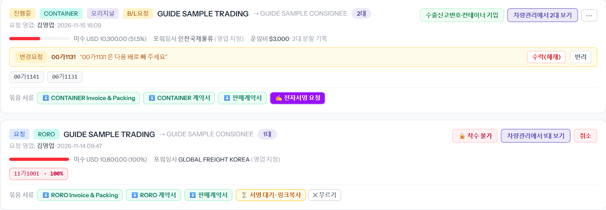
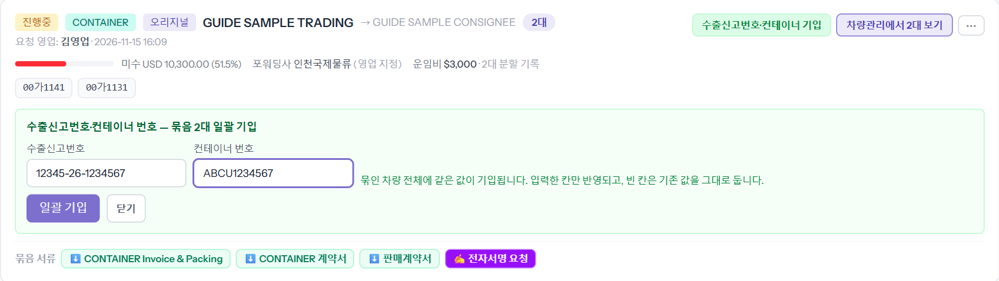
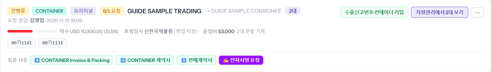

영업이 board 에서 「이 차들을 한 배로 보내 주세요」 묶음을 올리면 ERP 「선적요청」에 한 장씩 쌓입니다. 수출통관이 묶음을 맡아 진행하고, 신고번호 · 컨테이너를 한 번에 넣고, B/L 요청과 변경요청을 처리합니다. 예시 묶음(00가1141 · 00가1131, GUIDE SAMPLE TRADING)은 가짜입니다.
① 묶음 보기
1단계
왼쪽 메뉴 「선적요청」 — 묶음 한 장에 필요한 것이 다 있습니다
맨 위 칩이 상태(요청 · 진행중 · 완료)와 선적 방식(RORO · CONTAINER), B/L 종류, 「B/L요청」 여부입니다. 그 아래 바이어 → 컨사이니, 대수, 묶음 미수와 입금률, 영업이 고른 포워딩사, 컨테이너 운임비(대수만큼 나눠 차마다 기록)가 나옵니다. 「묶음 서류」에서 Invoice & Packing · 계약서 · 판매계약서를 바로 받습니다.

- 위쪽 탭 「할 일」은 요청 · 진행중 묶음만, 「전체」는 끝난 것까지 보여 줍니다. 오른쪽 칸에 바이어 · 컨사이니 · 차량번호로 찾습니다.
- [차량관리에서 N대 보기]는 그 묶음 차들만 차량 관리 목록으로 엽니다.
② 진행
2단계
[⋯] → 「진행중으로」 — 맡았다는 표시입니다
진행중이 되면 영업이 board 에서 그 묶음을 마음대로 고칠 수 없고, 바꾸려면 변경요청을 보내야 합니다. 일이 끝나면 같은 [⋯]에서 「완료 처리」.
- 묶음 전체 입금률이 회사 기준에 못 미치면 「🔒 착수 불가」가 뜨고 진행중으로 못 바꿉니다(아래 RORO 묶음). [차량관리에서 보기]로 어느 차가 모자란지 보고, 필요하면 씬 「입금률 게이트에 막혔을 때」대로 우회 승인을 받습니다.
3단계
[수출신고번호·컨테이너 기입] → 두 칸 → [일괄 기입]
묶인 차 전체에 같은 값이 들어갑니다. 넣은 칸만 바뀌고 빈 칸은 기존 값을 그대로 둡니다 — 신고번호만, 컨테이너만 따로 넣어도 됩니다.

③ B/L 요청 · 변경요청
4단계
「B/L요청」 칩이 붙으면 B/L 을 발급합니다
영업이 board 에서 B/L 을 요청하면 묶음에 「B/L요청」 칩과 오리지널 · 써랜더 구분이 붙습니다. [B/L번호·선박명 기입]으로 B/L 번호 · 컨테이너 · 선박명을 묶음 전체에 넣습니다.
- 이 버튼은 관리 이상에게 보입니다(수출통관 계정엔 없음).
- 묶음 안에 완납 안 된 차가 한 대라도 있으면 막힙니다 — B/L 발급 우회 승인이 따로 필요합니다.
- B/L 파일은 차마다 B/L 탭에 올립니다(씬 「B/L 발급과 거래완료」).
5단계
노란 「변경요청」 줄 → [수락(해제)] 또는 [반려]
진행중 묶음을 영업이 바꾸고 싶으면 차 한 대씩 사유와 함께 변경요청을 보냅니다.
- 수락(해제) — 그 차를 묶음에서 뺍니다. 영업이 board 에서 다시 묶을 수 있습니다.
- 반려 — 그대로 진행합니다. 노란 줄만 사라집니다.

알아 둘 것
- 요청 상태인 묶음은 영업이 board 에서 다시 짜면 그대로 바뀝니다(차를 빼면 그 차는 묶음에서 사라짐). 진행중부터는 변경요청으로만 바뀝니다.
- 컨테이너 운임비는 대수만큼 나눠 각 차 판매 탭 「운임비(USD)」에 기록됩니다.
- 묶음을 통째로 무르려면 [⋯] → 「취소」. 완료된 묶음은 취소할 수 없습니다.